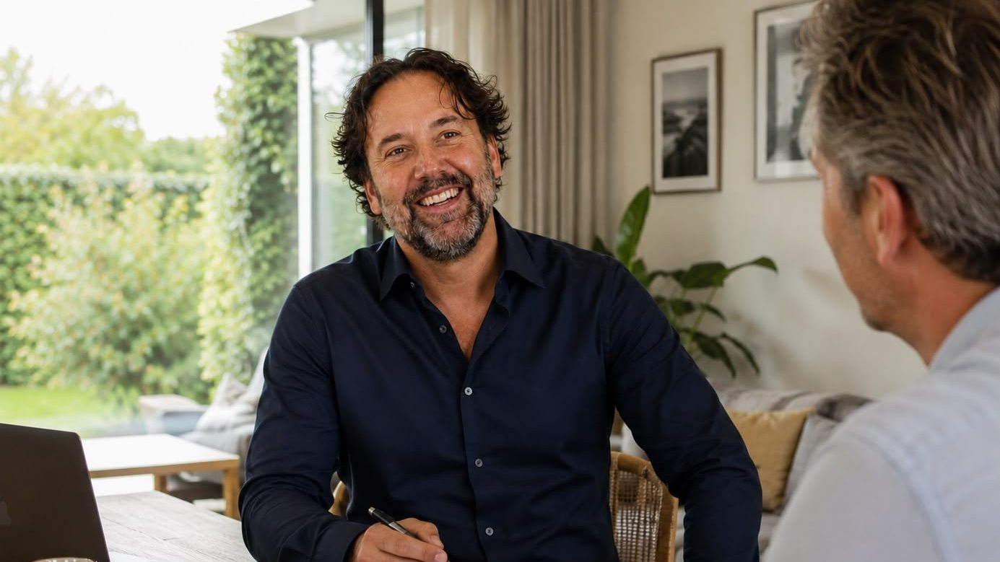
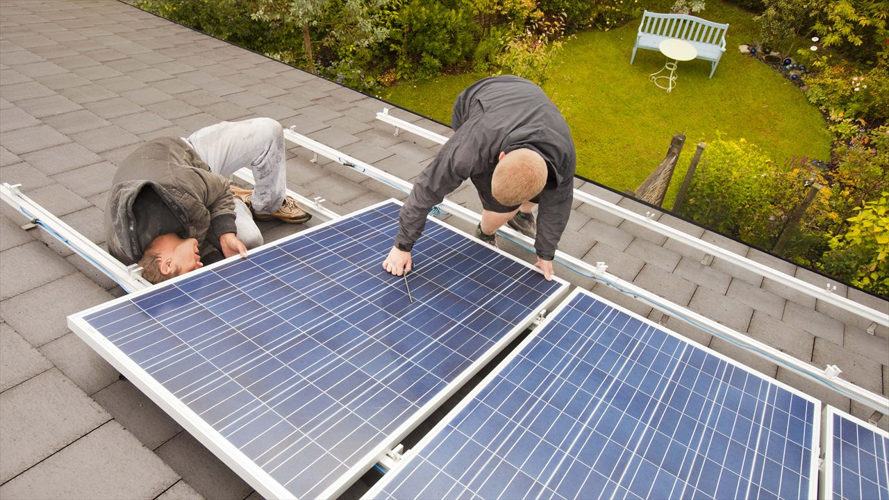
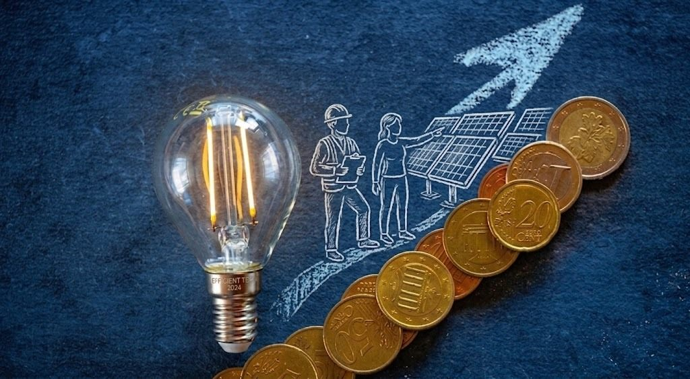
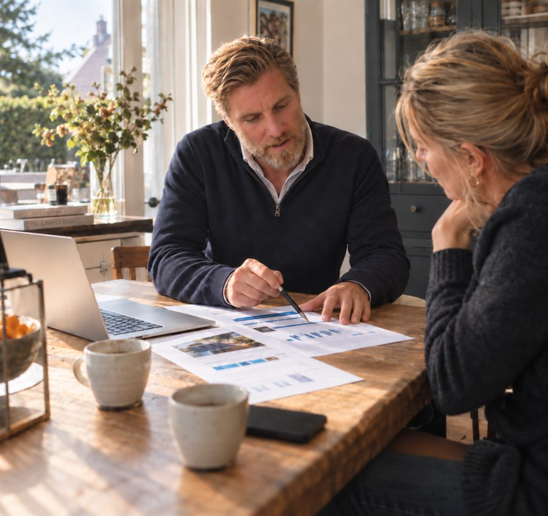
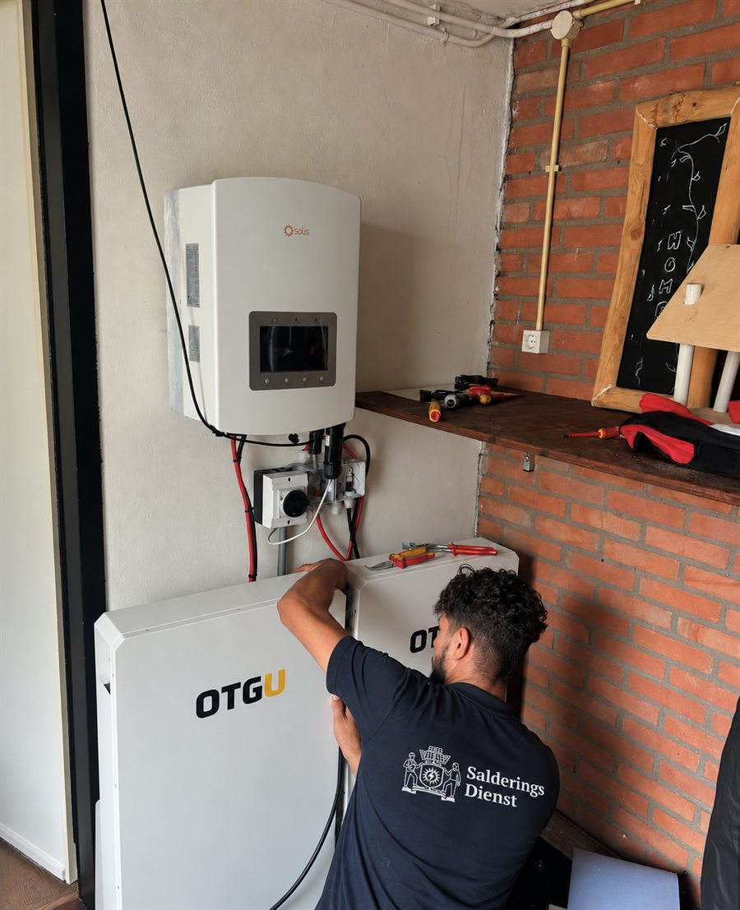
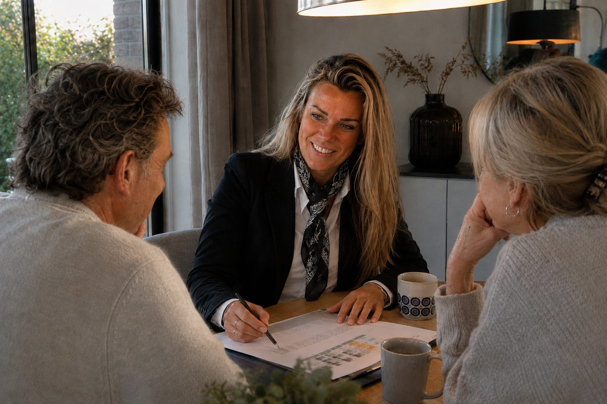
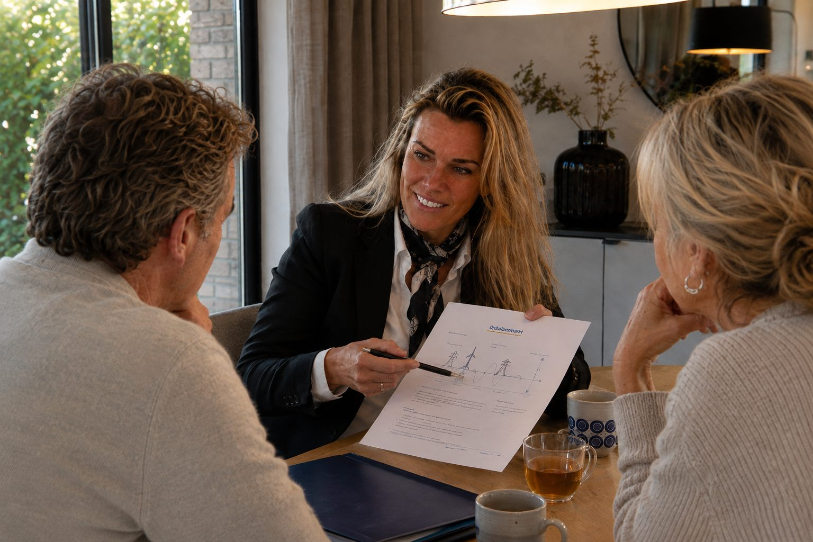
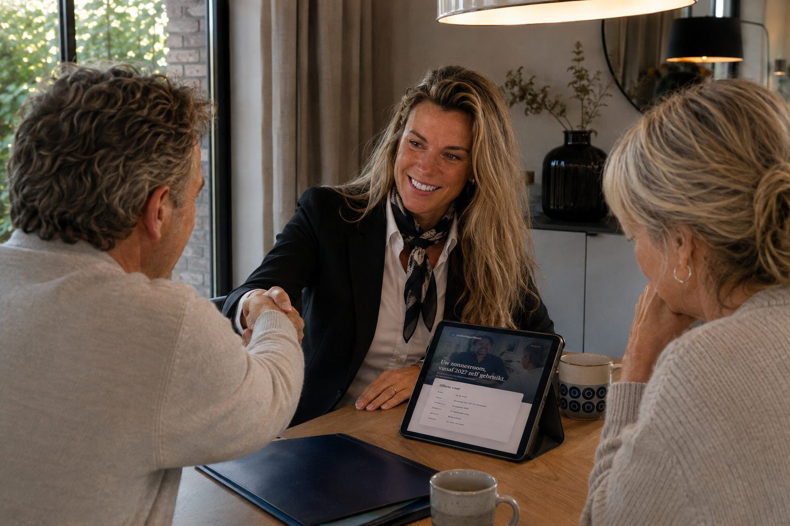

Kim
Adviseur

Wij rekenen door wat 2027 voor uw woning betekent.
Nog … dagen tot de salderingsregeling stopt.
Bereken uw impactU krijgt een doorrekening van uw eigen verbruik en opwek. Pas daarna bespreken we of een oplossing loont, en welke.
Advies, levering, subsidieaanvraag en installatie door gecertificeerde partners. U hoeft zelf niets te regelen.
Wij volgen de wetgeving rond 1 januari 2027 op de voet en vertalen die naar wat het voor uw woning betekent.
Doe de woningcheck. Het duurt minder dan een minuut.
Wij adviseren woningeigenaren. Huurt u? Dan kunt u de uitkomst met uw verhuurder bespreken.
Dit staat op uw jaarafrekening. Weet u het niet? Laat ons het inschatten.
Op basis van uw ingevulde gegevens
Dit betreft een schatting
Eerst het advies, daarna de uitvoering als u dat wilt.

Nieuwe panelen, vooraf doorgerekend op opbrengst.
Bewaart zonnestroom van overdag voor de avond.

Verwarmt op stroom in plaats van op gas.

Stuurt batterij en verbruik op de stroomprijs.
Meer uit uw huidige installatie, zonder extra panelen.
Van eerste gesprek tot werkende installatie, in vier stappen.





Eerst rekenen, dan pas adviseren.
Adviseur
Adviseur
Adviseur
Adviseur
Adviseur
Adviseur
Adviseur
Adviseur
Wij rekenen eerst uw situatie onafhankelijk door; dat advies is kosteloos en vrijblijvend. Kiest u voor een oplossing, dan kunt u die direct via ons afnemen: levering, subsidie en installatie via gecertificeerde partners. Dat is nooit verplicht: u beslist zelf.
Heeft u een klacht? Dan kunt u zich melden via ons klachtenmeldpunt.
„Eindelijk iemand die eerst rekent en dan pas adviseert. De batterij hing er drie weken later.”
„Het advies was gratis en duidelijk. De subsidieaanvraag hebben ze volledig uit handen genomen.”
„Geen verkooppraatje. In ons geval bleek een kleinere batterij voldoende, dat scheelde flink.”
Het adviesgesprek duurt gemiddeld ongeveer 1,5 uur. U kiest zelf of de adviseur bij u thuis langskomt of dat het gesprek online plaatsvindt; bij u thuis krijgt de adviseur het meest complete beeld van uw situatie. De adviseur neemt de tijd om al uw vragen te beantwoorden.
Vooraf neemt de adviseur telefonisch contact met u op voor een korte kennismaking. In dat gesprek geeft de adviseur aan welke documenten of gegevens handig zijn om alvast klaar te leggen, zoals uw jaarafrekening en het aantal zonnepanelen. Zo kan de adviseur zich goed voorbereiden en u tijdens het gesprek gericht adviseren.
U spreekt met de adviseur die u gedurende het hele traject begeleidt. Deze adviseur is uw vaste contactpersoon en helpt u van begin tot eind. Vanuit ons kantoor ondersteunen wij de adviseurs, zodat de kwaliteit van alle gesprekken gewaarborgd blijft.
Ja. Na afloop van het gesprek ontvangt u een duidelijke offerte met een overzicht van de kosten en de mogelijkheden. De adviseur bespreekt stap voor stap wat het beste past bij uw situatie, zodat u precies weet waar u aan toe bent bij de vervolgstappen.
Dat is geen probleem. Het adviesgesprek is er juist om samen met de adviseur te ontdekken wat het beste past bij uw wensen en situatie. U kunt al uw vragen stellen en rustig de mogelijkheden verkennen. Het gesprek is kosteloos en verplicht u tot niets.
Staat uw vraag er niet bij?
Nog … dagen tot 1 januari 2027
Kosteloos en zonder verplichtingen.
Beantwoord deze vragen, dan berekenen wij uw stroomverbruik.
Vul het aantal zonnepanelen in, dan rekenen wij de jaarlijkse opwek uit.
Wij rekenen met 315 kWh per paneel per jaar.